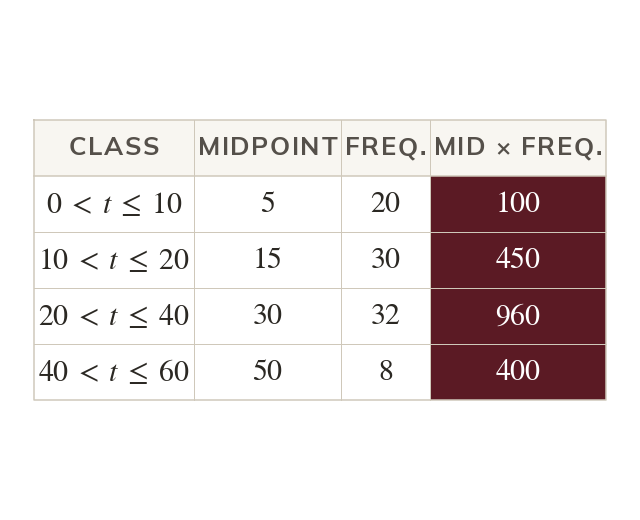
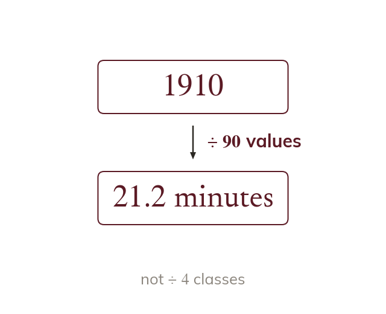
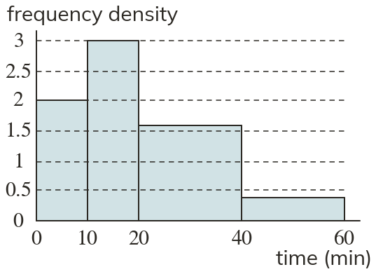
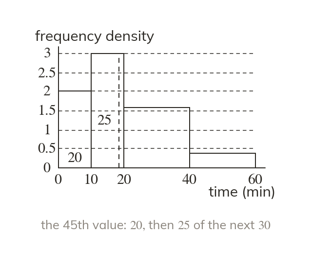
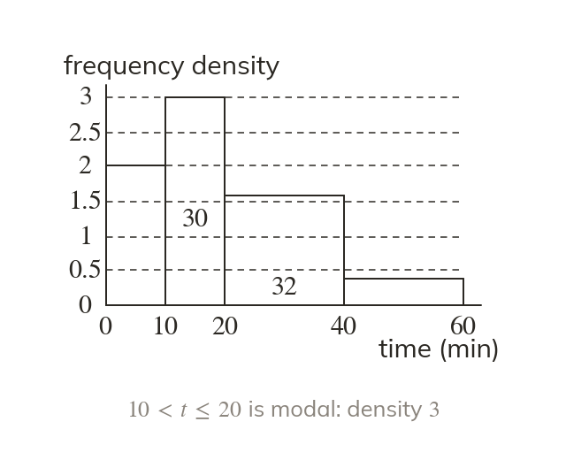

Frequencies first
A histogram's averages need its frequencies. Find each one as density times width.
Doctors' waiting times and journey times are often published as histograms. Estimating their mean and median turns the picture back into numbers worth comparing.
Work down the page at your own pace. Write every answer in your book first, then click to check it.
Read each card, then follow the worked examples one step at a time.

A histogram's averages need its frequencies. Find each one as density times width.

The products total
Divide by the values, not by the classes.

Pick an answer. If it's wrong, the feedback tells you which mistake it was.
Read each card, then follow the worked examples one step at a time.

The median has half the total frequency below it. Count the areas from the left until you reach it.

The modal class has the greatest frequency density. Its bar is the tallest, whatever its width.
Pick an answer. If it's wrong, the feedback tells you which mistake it was.
Finished? Next lesson: 10H.20.5 Histograms with Missing Data.
Log in, then search for a code to practise that skill.
Videos, worksheets and more on each part of this lesson.